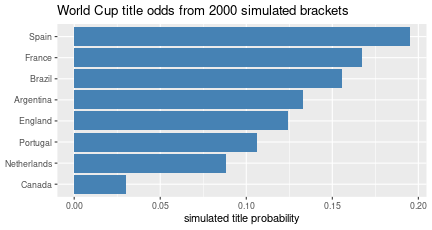

Leo Breiman — a Berkeley statistician — wrote a famous 2001 essay, “Statistical Modeling: The Two Cultures,” telling the story of his own move from one half of this course to the other. He identifies two ways to analyze data:
The trade is real. The predictive culture often predicts better — especially on high-dimensional data like images — but it buys accuracy at the price of understanding: a model tuned only to predict licenses no claims about how the world works. (Your instructor leans culture-1 philosophically: prediction is useful but “can only get you so far” — you can say what you’d have predicted, not why.) Sometimes you can peek inside a complex model (which hidden unit detects what — see the neural networks notes), but those interpretations are shaky.
Inference (culture 1). The core question is often “is \(X\) merely associated with \(Y\)?” You can answer it:
None of that is causal inference. There is a causal structure to real data, but you usually don’t know it; only in well-studied areas do you have the pieces (how flossing affects inflammation, how inflammation affects heart disease…) to attempt it (causal inference).
Prediction (culture 2). Many models — linear/logistic regression, trees, neural networks. Complex models often (not always) predict better, especially in high dimensions; interpreting them is possible but limited.
The rest of these notes is a culture-2 worked example: predicting a tournament.
The goal: build a full bracket — a predicted winner for each game, and overall finishing odds. This is pure predictive culture: we make no claim about why teams win, only about who probably will.
Not FIFA rankings — they update slowly and ignore that some teams landed in harder groups. A better source is a prediction market.
Prediction markets. A site where people bet on outcomes. If a “yes” share for Spain wins the World Cup trades at 16.6¢ — pay 16.6¢ now, receive $1 if Spain wins — the market is implicitly pricing Spain’s chance at about 17%. The site acts as a broker: as demand for “yes” rises, its price rises. For heavily-traded events these implied probabilities are usually more reliable than slow official rankings — when a goal is scored mid-game, prices adjust in seconds. (This is a lens on probability, not a betting recommendation.)
You don’t need a scraper. A quick, reliable workflow:
# 1. Select-all / copy the market's probabilities from the web page,
# paste into polymarket_raw.txt.
# 2. Ask the coding agent:
"Turn polymarket_raw.txt into a tidy CSV: columns team, win_prob."
# 3. And, in parallel:
"Scrape the latest FIFA men's ranking into fifa.csv."Copy-paste → “make me a CSV” is often faster and more robust than scraping ad-heavy sites like Polymarket — and you can verify the small CSV by eye. FIFA serves here only as a tiebreaker (the market rates all the no-hope teams identically).
Give each team a strength, and turn the difference in strength into a match probability with the logistic function from logistic regression: a bigger edge → a higher win probability, squashed into \([0,1]\).
# Win probability for A vs B as a logistic function of the rating gap.
p_win <- function(rating_a, rating_b, scale = 0.9) {
plogis(scale * (rating_a - rating_b))
}
p_win(2.0, 1.0) # a one-point-stronger team## [1] 0.7109495p_win(1.0, 1.0) # evenly matched -> 0.5## [1] 0.5Group games can end in draws, so we carve the same logistic score into loss / draw / win bands — a modeling choice you then sanity-check by simulating a few games and seeing whether the mix looks plausible (not all draws, not the same team always winning):
outcome_probs <- function(rating_a, rating_b, scale = 0.9) {
s <- plogis(scale * (rating_a - rating_b)) # in (0,1)
# Map the score to (loss, draw, win). Draws most likely for even games.
draw <- 0.30 * (1 - abs(2 * s - 1)) # peaks at s = 0.5
win <- (1 - draw) * s
loss <- (1 - draw) * (1 - s)
c(loss = loss, draw = draw, win = win)
}
round(outcome_probs(2.0, 1.0), 2) # stronger team: win most likely## loss draw win
## 0.24 0.17 0.59round(outcome_probs(1.0, 1.0), 2) # even: draw inflated, win = loss## loss draw win
## 0.35 0.30 0.35Because the bracket structure matters: a strong team in a brutal group can be knocked out early, and raw rankings can’t see that. So we simulate the whole tournament many times and count how often each team advances — a Monte-Carlo estimate of finishing odds.
set.seed(1626)
# Illustrative strengths (NOT real market numbers) for eight teams.
teams <- c(Spain = 2.4, France = 2.3, Brazil = 2.2, Argentina = 2.1,
England = 1.8, Portugal = 1.7, Netherlands = 1.5, Canada = 1.0)
# One single-elimination match: stronger team wins with prob p_win
# (knockouts have no draws — a shootout resolves them).
play <- function(a, b) if (runif(1) < p_win(teams[a], teams[b])) a else b
simulate_bracket <- function() {
round <- names(teams) # 8-team bracket, seeded 1..8
while (length(round) > 1) {
winners <- character(0)
for (i in seq(1, length(round), by = 2))
winners <- c(winners, play(round[i], round[i + 1]))
round <- winners
}
round # the champion
}
champions <- replicate(2000, simulate_bracket())
title_odds <- sort(table(champions) / length(champions), decreasing = TRUE)
round(title_odds, 3)## champions
## Spain France Brazil Argentina England Portugal
## 0.195 0.168 0.156 0.133 0.124 0.106
## Netherlands Canada
## 0.088 0.030odds_df <- data.frame(team = names(title_odds), prob = as.numeric(title_odds))
ggplot(odds_df, aes(reorder(team, prob), prob)) +
geom_col(fill = "steelblue") + coord_flip() +
labs(x = NULL, y = "simulated title probability",
title = "World Cup title odds from 2000 simulated brackets")
Notice how the small per-game edges compound: the favourite is barely ahead of the second seed in any single match, yet ends up with a clearly larger title probability, and it sits well above the even 1-in-8 (0.125) a coin-flip bracket would give. That amplification — the “rich get richer” — is exactly what raw rankings miss and simulation captures. If you fed the market’s own numbers in, you could even re-tune scale until the simulation is self-consistent with the market.
The agent will happily run all this, and it makes mistakes — here it repeatedly grabbed data it already had, and once computed standings for the groups instead of the tournament. If you were betting real money you’d audit the generated code; for a low-stakes office pool, less so. The honest takeaway: the optimal bracket is “the market’s probabilities, plus your own hot takes” — and the point of the exercise is that assembling this whole predictive pipeline, agent and all, is now something you can do in an afternoon.